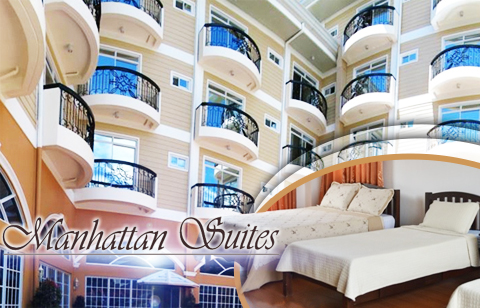
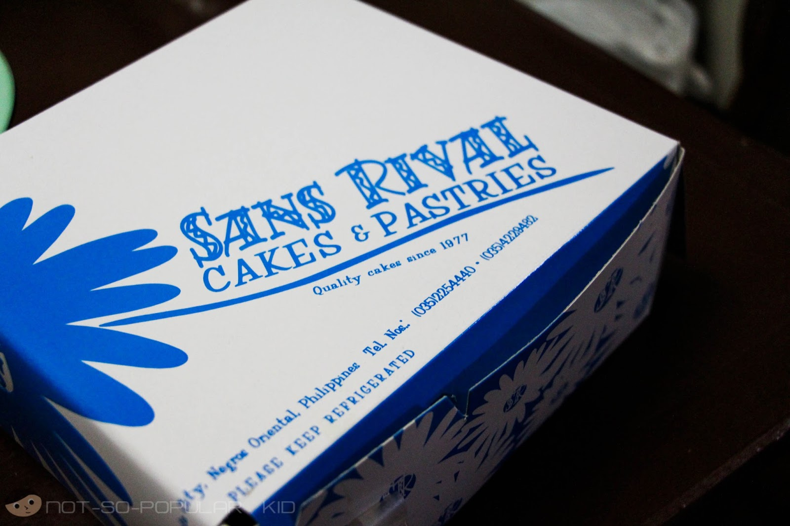
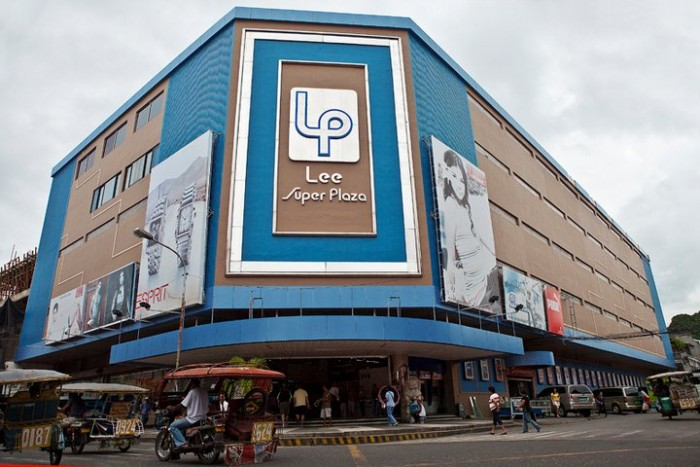

A university town and provincial capital, bustling and relatively urbane, thanks in part to a large and thriving expat community, Dumaguete is also a convenient base for exploring all that southern Negros has to offer. The small city centre is as cramped, noisy and chaotic as any another city in the Philippines, but Dumaguete's harbour-front promenade, lined with upmarket bars, restaurants and food stalls, and blessed with peaceful sea views, is an undeniable draw. After becoming familiar with the city – one only needs a couple of days – it becomes a comfortable place to return after short stints diving, hiking or swimming nearby.
|
Rizal Boulevard Twin Lakes National Park Centrop Silliman University Anthropology Museum Bell Tower Cathedral of St Catherine of Alexandria |
ADVERTISEMENTMANHATTAN SUITES INNaddress : South Road Calindagan, Dumaguete, 6200 Negros Oriental phone : (035) 422 8200  SANS RIVAL CAKES & PASTRIESaddress : San Jose St, Dumaguete, 6200 Negros Oriental hours : 8:30AM – 8PM phone : (035) 422 8200  LEE SUPER PLAZAaddress : Perdices corner San Jose St., Dumaguete hours : 8AM – 7:30PM phone : (035) 422 8200 |
SIGN INget updated |
KAMUSTAMikhailangelo B. Panzo :: website designer |